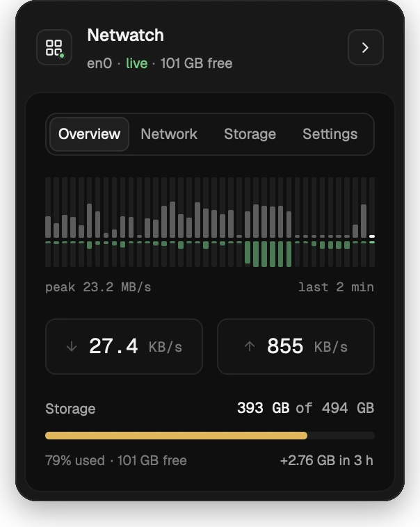

Straight from the kernel
Rates come from sysctl(NET_RT_IFLIST2): 64-bit byte counters that don't wrap on a busy day.
Utilify is a small, open-source menu-bar monitor for macOS. Live download and upload rates, a graph of recent traffic and your disk usage, with a dashboard one click away.

Rates, a 24-bar download graph and a storage bar, redrawn every tick in a few points of menu bar.
Rust from the counters to the pixels. No Dock icon, no helper, no background service.
64-bit counters straight from the kernel, physical ports only, so VPN traffic isn't counted twice.
Left-click the status item and a dashboard drops down beneath it, in four tabs. It reopens on the tab you left, and clicking away closes it.
The last two minutes as bars, download above the line and upload below, with the peak. Then the current rates in large type, and how full your disk is.
The same graph, plus the interface you're on, its link speed and how much of it is in use, and everything received and sent since Utilify started.
Run a test and see download and upload next to your link rate, and latency idle and under load, rated Good, Fair or Poor. It uses macOS's built-in networkQuality and takes about 20 seconds.
Used space on your startup disk over the last 30 days, sampled every 15 minutes and kept across launches, with a dashed trend line and the average change per day.
How often to refresh, whether to show speeds in the menu bar, and where the storage bar turns yellow and red. Quit is here too.
Utilify reads the same counters as the kernel's own tools, and is explicit about what they mean.
Rates come from sysctl(NET_RT_IFLIST2): 64-bit byte counters that don't wrap on a busy day.
Only enN interfaces are counted. VPN tunnels already cross them, so nothing is counted twice.
Ethernet shows the negotiated speed. Wi-Fi shows the current PHY rate, which moves with signal quality.
In the dashboard, the storage bar is green, then yellow from 50% used and red from 80%. Move either line in Settings.
Crossing into red posts one notification. It re-arms once usage drops back below the line, and stays quiet if the disk was already red at launch.
No account and no analytics. The only network traffic of its own is the speed test, and only when you run it.
Utilify is MIT licensed and built in the open, on the same stack as
Guidy: Rust, GPUI, tray-icon and resvg.
There are no signed builds yet. With a recent Rust toolchain, the install script builds the app, puts it in Applications and opens it. Re-run it after pulling to update.
$ git clone https://github.com/imran-vz/Netwatch && cd Netwatch $ ./install.sh